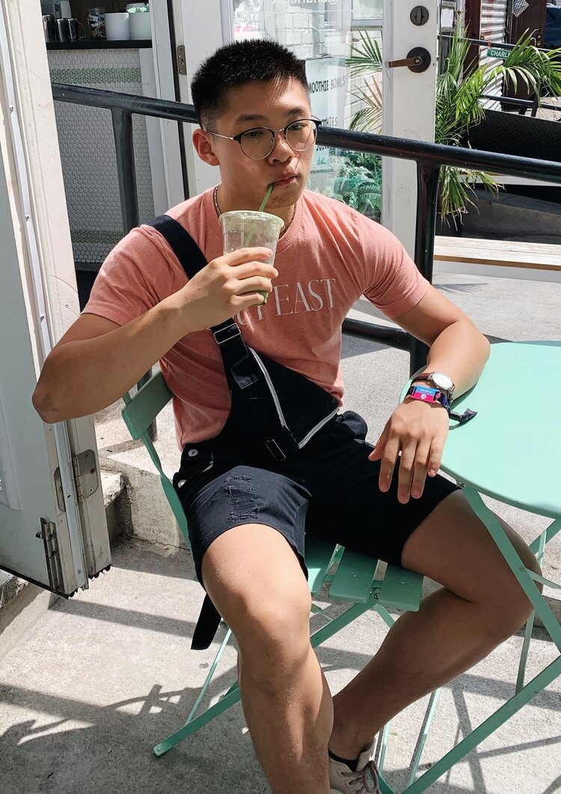

About Me
Source: Brad and Butter
Bradley Chen
My name is Bradley and I am a currently a junior at Cornell University's Hotel School. Growing up in Hong Kong, America, and Shanghai, I often had to travel to accommodate to my parents' busy schedules. As a result, exposure to the hospitality industry was inevitable in my childhood, and I gradually began to fall in love with the concept of service.
My passion for baking is one that has stuck with me since I was six years old, when I learned sticking my head into a oven was probably not the best idea in the world. At the age of 14, I attempted to jump into the world of blogging, and created what I can only call an embarrassment to my career thus far. Fortunately, I am back! Here, I will be sharing original recipes inspired by what I see, live, and breathe. Everyday I wake up with one goal in mind: to say goodbye to someone knowing that I made their day a little better. This blog is a manifestation of this belief, and I really hope anyone who stumbles across this domain enjoys their time spent here.
If you have any questions about the blog or about me, please feel free to shoot an email to thebradandbutter@gmail.com. Once again, I am so glad to have you here, and welcome to Brad & Butter.
faq
- what is my all-time recipe?
- chocolate Banana Bread
- what is my favorite food?
- fried chicken
- out of all the places I have travelled to, what my most favorite place and where do I want to travel most next?
- I loved the time I travelled to Japan, but I really want to travel to Switzerland one day.
- what are the meanings of your tattoos
- they all mean different things, but they help me appreciate myself, the people around me, and life as a whole.
- what do I use to take my photos?
- I currently use an iPhone Xr, but am looking to move to a DSLR.
- where do I get my inspirations from?
- I get my inspiration from other food bloggers, firends, family members, and traditional Chinese Cuisines.

Meet the Brad behind the Butter...

eat pretty
drink pretty
sing pretty
live pretty
you are pretty
Recent Posts